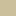
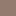

<!doctype html>
<html lang="en">
    <head>
        <meta charset="utf-8">
        <meta http-equiv="X-UA-Compatible" content="IE=edge">
        <meta name="viewport" content="initial-scale=1,user-scalable=no,maximum-scale=1,width=device-width">
        <meta name="mobile-web-app-capable" content="yes">
        <meta name="apple-mobile-web-app-capable" content="yes">
        <link rel="stylesheet" href="css/leaflet.css">
        <link rel="stylesheet" href="css/qgis2web.css"><link rel="stylesheet" href="css/fontawesome-all.min.css">
        <style>
        html, body, #map {
            width: 100%;
            height: 100%;
            padding: 0;
            margin: 0;
        }
        </style>
        <title></title>
    </head>
    <body>
        <div id="map">
        </div>
        <script src="js/qgis2web_expressions.js"></script>
        <script src="js/leaflet.js"></script>
        <script src="js/leaflet.rotatedMarker.js"></script>
        <script src="js/leaflet.pattern.js"></script>
        <script src="js/leaflet-hash.js"></script>
        <script src="js/Autolinker.min.js"></script>
        <script src="js/rbush.min.js"></script>
        <script src="js/labelgun.min.js"></script>
        <script src="js/labels.js"></script>
        <script src="data/SedimentCover_1.js"></script>
        <script>
        var map = L.map('map', {
            zoomControl:true, maxZoom:28, minZoom:3
        }).fitBounds([[36.23906022008198,-109.30718685292229],[70.76635147293878,-68.30602849015483]]);
        var hash = new L.Hash(map);
        map.attributionControl.setPrefix('<a href="https://github.com/tomchadwin/qgis2web" target="_blank">qgis2web</a> &middot; <a href="https://leafletjs.com" title="A JS library for interactive maps">Leaflet</a> &middot; <a href="https://qgis.org">QGIS</a>');
        var bounds_group = new L.featureGroup([]);
        function setBounds() {
        }
        var layer_ESRIWorldImagery_0 = L.tileLayer('https://server.arcgisonline.com/ArcGIS/rest/services/World_Imagery/MapServer/tile/{z}/{y}/{x}', {
            opacity: 1.0,
            attribution: 'Tiles &copy; Esri &mdash; Source: Esri, i-cubed, USDA, USGS, AEX, GeoEye, Getmapping, Aerogrid, IGN, IGP, UPR-EGP, and the GIS User Community',
            minZoom: 3,
            maxZoom: 28,
            minNativeZoom: 0,
            maxNativeZoom: 18
        });
        layer_ESRIWorldImagery_0;
        map.addLayer(layer_ESRIWorldImagery_0);
        function pop_SedimentCover_1(feature, layer) {
            var popupContent = '<table>\
                    <tr>\
                        <td colspan="2">' + (feature.properties['Name'] !== null ? Autolinker.link(feature.properties['Name'].toLocaleString(), {truncate: {length: 30, location: 'smart'}}) : '') + '</td>\
                    </tr>\
                </table>';
            layer.bindPopup(popupContent, {maxHeight: 400});
        }

        function style_SedimentCover_1_0(feature) {
            switch(String(feature.properties['Name'])) {
                case 'blanket':
                    return {
                pane: 'pane_SedimentCover_1',
                stroke: false, 
                fill: true,
                fillOpacity: 1,
                fillColor: 'rgba(203,191,155,0.7)',
                interactive: true,
            }
                    break;
                case 'rock':
                    return {
                pane: 'pane_SedimentCover_1',
                stroke: false, 
                fill: true,
                fillOpacity: 1,
                fillColor: 'rgba(147,123,111,0.7)',
                interactive: true,
            }
                    break;
                case 'veneer':
                    return {
                pane: 'pane_SedimentCover_1',
                stroke: false, 
                fill: true,
                fillOpacity: 1,
                fillColor: 'rgba(177,157,149,0.7)',
                interactive: true,
            }
                    break;
            }
        }
        map.createPane('pane_SedimentCover_1');
        map.getPane('pane_SedimentCover_1').style.zIndex = 401;
        map.getPane('pane_SedimentCover_1').style['mix-blend-mode'] = 'normal';
        var layer_SedimentCover_1 = new L.geoJson(json_SedimentCover_1, {
            attribution: '',
            interactive: true,
            dataVar: 'json_SedimentCover_1',
            layerName: 'layer_SedimentCover_1',
            pane: 'pane_SedimentCover_1',
            onEachFeature: pop_SedimentCover_1,
            style: style_SedimentCover_1_0,
        });
        bounds_group.addLayer(layer_SedimentCover_1);
        map.addLayer(layer_SedimentCover_1);
        var baseMaps = {};
        L.control.layers(baseMaps,{'Sediment Cover<br /><table><tr><td style="text-align: center;"></td><td>blanket</td></tr><tr><td style="text-align: center;"></td><td>rock</td></tr><tr><td style="text-align: center;"></td><td>veneer</td></tr></table>': layer_SedimentCover_1,"ESRI World Imagery": layer_ESRIWorldImagery_0,},{collapsed:false}).addTo(map);
        setBounds();
        </script>
    </body>
</html>
